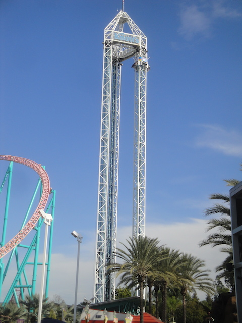
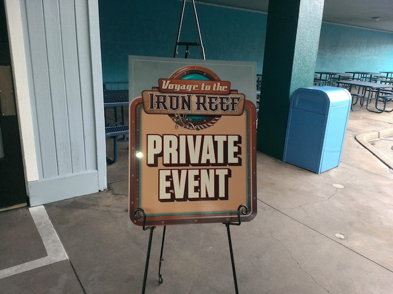
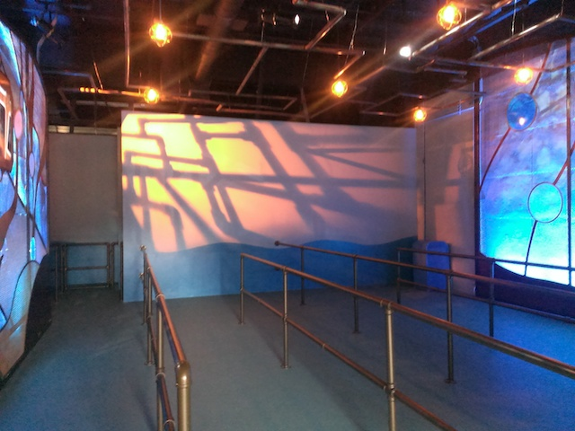
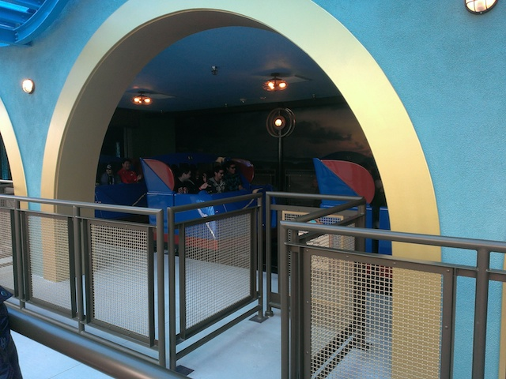
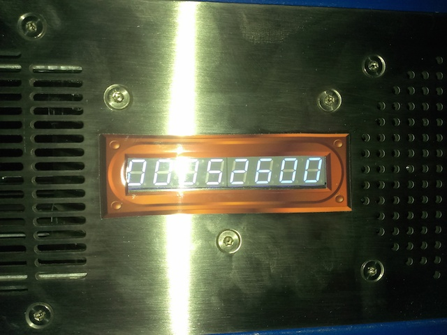
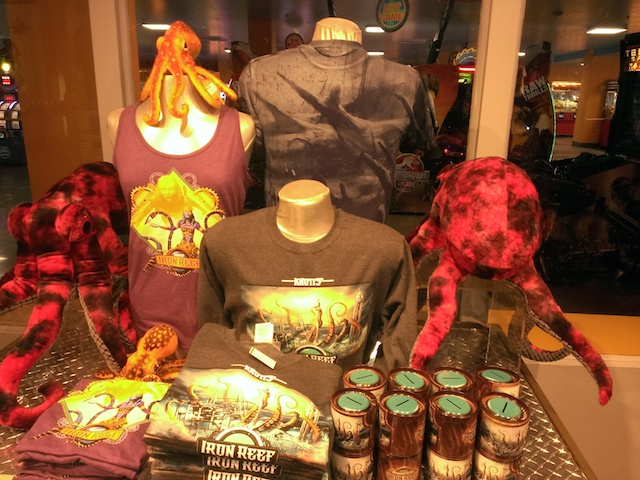
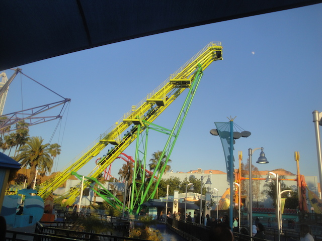
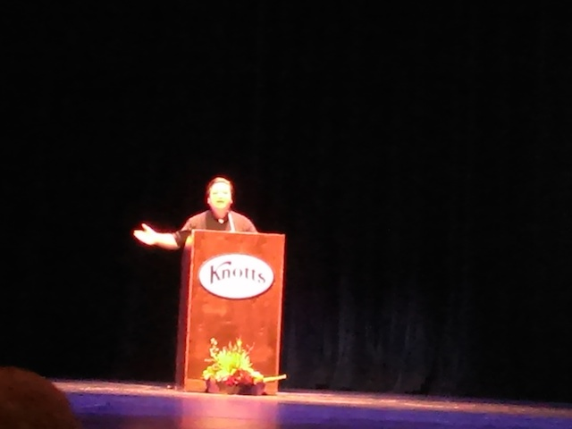
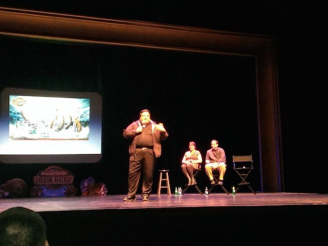
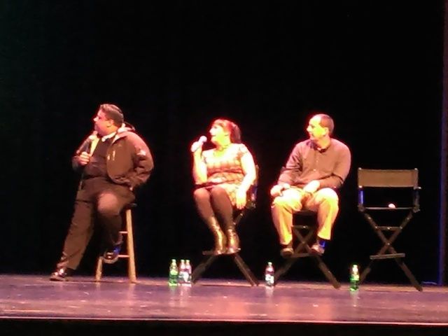

| |
Voyage to the Iron Reef Opening Day

All right. Time for another update. We're here at a private event to ride Voyage to the Iron Reef for Media Day before the park opens cause we're special in that way. =) So sorry Supreme Scream. Today's not about you.

All right. That's much better. Always enjoy going to Media Days and Special Events.
 Moving on, let's ride Voyage to the Iron Reef.
Moving on, let's ride Voyage to the Iron Reef.

Hmm. I see they did a good job with the line.

Holy Crap! This ride is awesome! I know I wasn't expecting much and was just sort of expecting your typical Sally Dark Ride. But honestly, I was really impressed with the way that this ride turned out to be. It used the exact same technology as Toy Story Mania, and Maus de Chocolate. I love both of this rides, and am so happy that this ride is on the same level. Amazingly enough, this ride could very well crack our Top 10 Dark Rides List.

My score on the ride was...all right. But even so, I don't care. This ride is just too damn fun. Especially with all the hidden easter eggs.

And after riding, it spits you right into the gift shop. Hey, the merchandise for the ride is really cool. =)

Screw Boomerang. You're much better off at Voyage to the Iron Reef.

And after getting multiple rides on Knott's new kickass dark ride, they did a presentation and a Q&A on Voyage to the Iron Reef.

They told us about how they wanted something to fit in with the Boardwalk, be very Knottish, survive in the future, have a Steampunk edge to it, and compete with it's next door neighbor. I must say, congratulations. You guys succeeded in every single remark. Great job from Incrediblecoasters. =)

And that's Voyage to the Iron Reef. It's a fantastic dark ride, and Knotts Berry Farm really put on a great event to showcase the ride. You all should get out to Knotts Berry Farm this summer and check it out. It's a really good ride.
Home
|